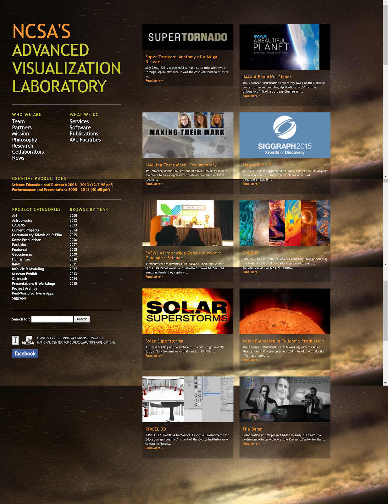
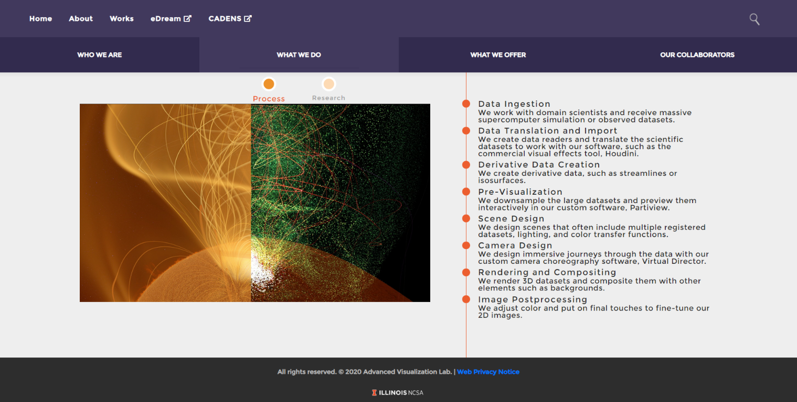
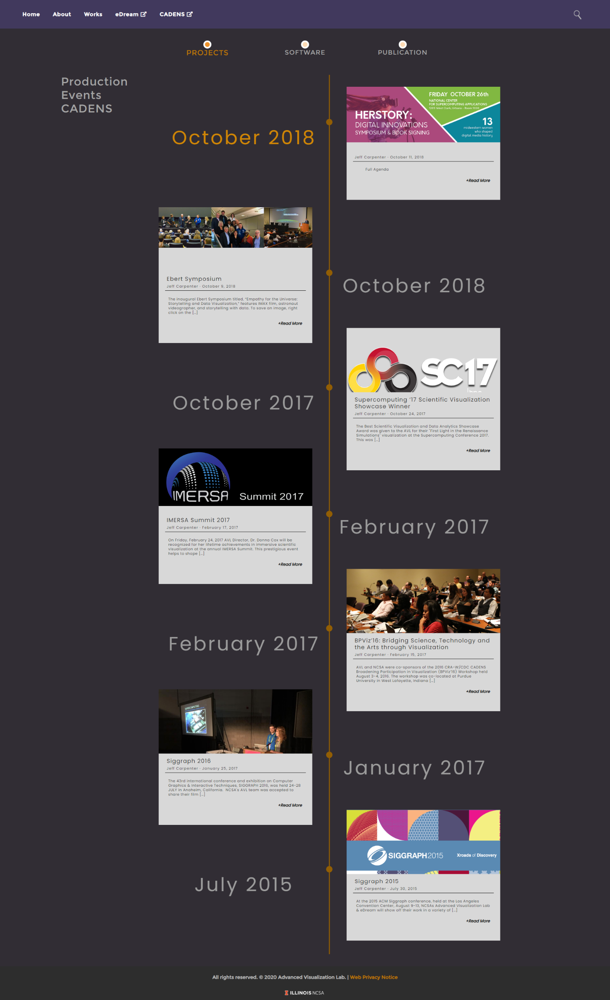

During my SPIN (student-pushing innovation) internship at the Advanced Visualization Lab (AVL) at the National Center for Supercomputing Applications (NCSA) while I was a student at UIUC, I developed a new WordPress theme for the AVL’s website based on our design intern Dawn Nguyen’s designs.
The AVL’s original website was outdated in style, difficult to navigate, and not mobile-friendly. I wrote templates in PHP to generate blog posts, coded animation-rich static pages for displaying information about the lab, and made the website responsive for easy navigation on mobile. To bring Dawn’s vibrant designs to life, I worked closely with her as I implemented her design page by page. Learning to use PHP to define page templates in WordPress was a bit of a challenge, but I was nonetheless able to get the Works and Events pages to look close to the designs.
I received the Fiddler Innovation Award for this web developmnt work in October 2018. See this NCSA story to read more about the award.
My work has been live at http://avl.ncsa.illinois.edu/ since summer 2018. Below are some screenshots showing the website’s change in looks.
 ↪ The homepage of the AVL’s website used in 2013-2018.
 ↪ The What We do -> Process static page.
 ↪ The Events page that automatically puts highlights the newest event post at the top of the timeline.